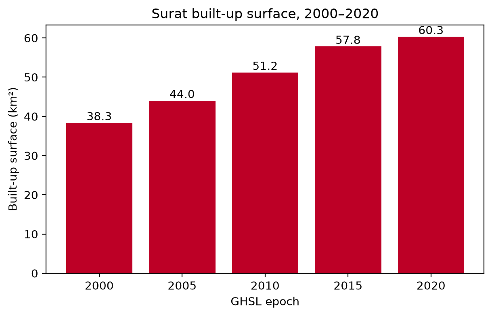
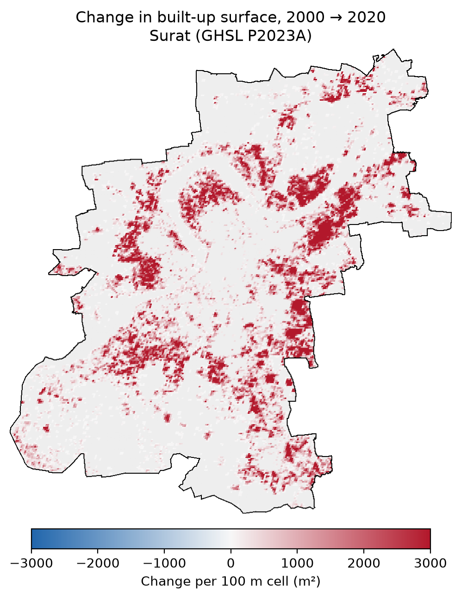
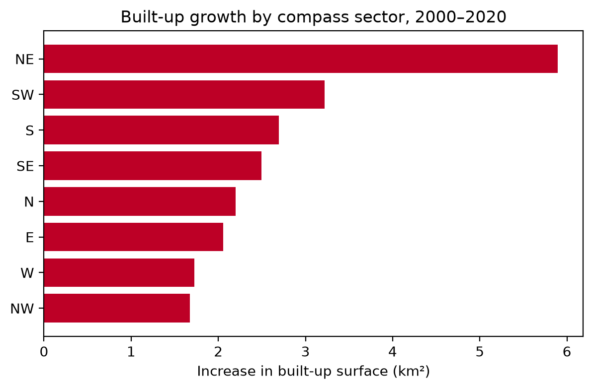

Rinsha Narayanan (HS25M110) · Urban Informatics and Spatial Analytics, IIT Tirupati · Question 2, Google Earth Engine
Data: GHSL Built-up Surface (JRC/GHSL/P2023A/GHS_BUILT_S, band built_surface, 100 m, epochs 2000–2020).
Boundary: Surat Urban Local Body polygon (ULB code 802629) from the Swachh Bharat Mission ULB layer, via ramSeraph/indian_admin_boundaries (CC0; attribution to datameet and the original government source).
Built-up surface rose from 38.3 km² (2000) to 60.3 km² (2020): +22.0 km² (57%), about 2.3% per year.
| year | built_km2 | pct_of_city | change_km2 | pct_vs_2000 |
|---|---|---|---|---|
| 2000 | 38.35 | 8.74 | – | 0.00 |
| 2005 | 44.00 | 10.03 | 5.66 | 14.75 |
| 2010 | 51.19 | 11.66 | 7.18 | 33.49 |
| 2015 | 57.82 | 13.17 | 6.63 | 50.79 |
| 2020 | 60.30 | 13.74 | 2.48 | 57.26 |

Built-up surface per 100 m cell: 0 → 8,000 m² (same scale for every year)


Epoch: 2000

Gross gain 22.0 km², gross loss 0.0 km², net 22.0 km².

| b2000 | b2020 | growth_km2 | share_of_growth_pct | |
|---|---|---|---|---|
| sector | ||||
| NE | 6.88 | 12.78 | 5.89 | 26.84 |
| SW | 4.39 | 7.60 | 3.22 | 14.66 |
| S | 8.16 | 10.86 | 2.70 | 12.28 |
| SE | 4.09 | 6.59 | 2.50 | 11.37 |
| N | 5.24 | 7.44 | 2.20 | 10.01 |
| E | 3.06 | 5.12 | 2.05 | 9.36 |
| W | 2.87 | 4.60 | 1.73 | 7.86 |
| NW | 3.64 | 5.32 | 1.67 | 7.62 |
Built-up surface in Surat increased from 38.3 km² in 2000 to 60.3 km² in 2020, a rise of 22.0 km² (57%), or about 2.3% per year. Built-up land covered 9% of the ULB area in 2000 and 14% in 2020. The fastest interval was 2005–2010 (+7.2 km²).
The gross gain was 22.0 km² against a gross loss of 0.0 km². The NE and SW sectors together account for 41% of the growth, while the NW sector grew the least. The change map shows where new built-up cells appear relative to the 2000 footprint.